🐞 Depuración¶
Descarga de diapositivas
1. ¿Qué es depurar?¶
Cuando un programa no hace lo que debería, la forma más lenta de encontrar el problema es ir añadiendo System.out.println por todo el código para ver qué valor tiene cada variable. La depuración es la alternativa profesional: consiste en ejecutar el programa de forma controlada, deteniéndolo en el punto que decidas, para observar y modificar su estado mientras está en marcha. La herramienta que hace esto posible es el depurador (debugger), integrado en cualquier IDE serio.
flowchart LR
A["❌ System.out.println\nen todo el código"] --> C["🐛 Error detectado"]
B["✅ Depurador\nBreakpoints + inspección"] --> CUn error que solo se ve en ejecución
| Java | |
|---|---|
Al ejecutarlo aparece:
| Text Only | |
|---|---|
El programa compila sin problema: el error es de lógica, no de sintaxis. La condición i <= numbers.length permite que i llegue a valer 5, pero el array solo tiene índices del 0 al 4. Debería ser i < numbers.length. Para encontrar este tipo de error sin adivinarlo a ojo, lo lógico es depurar paso a paso y observar qué vale i en cada vuelta del bucle.
2. Iniciar el depurador en IntelliJ¶
Depurar una aplicación de consola en IntelliJ se puede hacer de tres formas:
Haz clic en el área de números de línea (la zona gris a la izquierda del código) y selecciona Debug 'Main'.
Ve a Run → Debug 'Main'.
Pulsa Shift + F9.
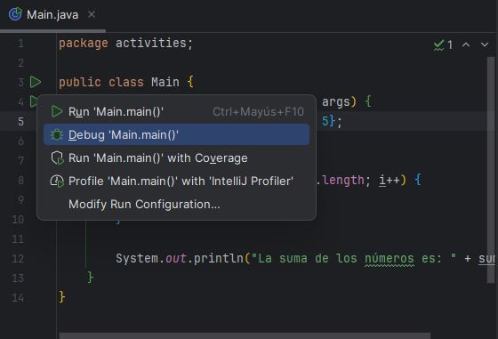
Sin breakpoints no pasa nada distinto
Si lanzas el depurador sin haber definido ningún punto de interrupción, el programa se ejecuta exactamente igual que con Run normal, de principio a fin, sin detenerse. Para que la depuración tenga sentido, hace falta marcar al menos un punto donde el programa se pare.
3. Puntos de interrupción (breakpoints)¶
Un breakpoint es una marca en una línea de código que le dice al depurador: "detén aquí la ejecución". Se añade haciendo clic en el margen izquierdo, junto al número de línea (aparece una bola roja y la línea se resalta), o con el atajo Ctrl + F8. Se quita haciendo clic otra vez sobre la bola roja.
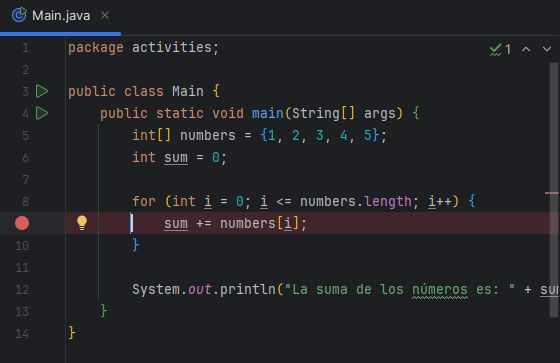
Cuando el programa llega a un breakpoint, se detiene y se abre la ventana Debug en la parte inferior del IDE. Desde ahí puedes:
- Visualizar los valores de las variables en ese instante.
- Ejecutar el programa paso a paso, línea a línea.
- Ver qué método ha llamado a cuál para llegar hasta ese punto.
3.1 Tipos de breakpoints¶
No todos los breakpoints se comportan igual. IntelliJ distingue varios tipos según qué hace que se active la parada:
| Tipo | Se activa cuando… |
|---|---|
| De línea | La ejecución llega a la línea de código donde se colocó. Es el más habitual. |
| De método | El programa entra o sale de un método concreto. Útil para comprobar condiciones de entrada/salida sin buscar la línea exacta. |
| Field Watchpoint (de campo) | Se lee o se modifica un atributo de instancia. Sirve para detectar quién está cambiando una variable de objeto sin que lo esperes. |
| De excepción | Se lanza una excepción concreta, aunque no esté directamente en tu código. Se configura desde Run → View Breakpoints (Ctrl + Shift + F8). |
Breakpoint de excepción
Un breakpoint de excepción sobre ArithmeticException detendría el programa justo en la línea return a / b;, antes de que el catch la capture, permitiéndote ver el estado exacto en el momento del fallo.
Se coloca directamente sobre la firma del método (aquí, multiply) y permite elegir si se activa al entrar, al salir, o ambos.
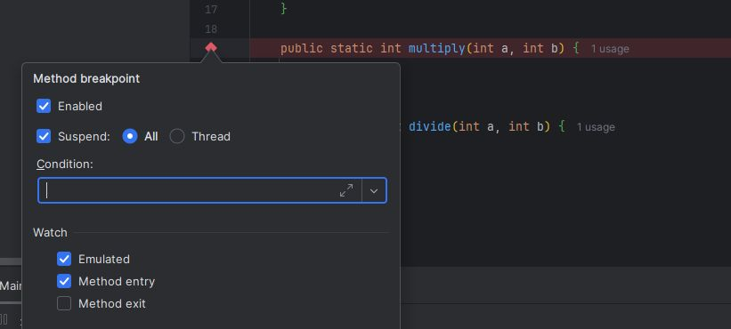
Se coloca sobre la declaración de un atributo (aquí, multiplicacion) y se activa cada vez que se lee o se escribe ese campo, sin importar desde qué método.
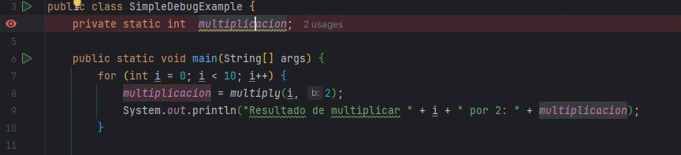
Se configura desde la ventana de Breakpoints marcando "Any exception" (o una excepción concreta), y se activa en el instante exacto en que se lanza.
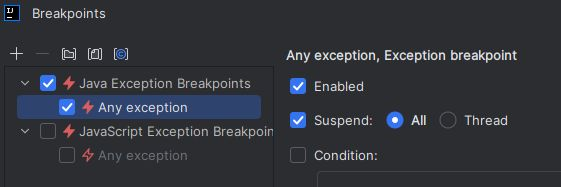
3.2 Configuraciones avanzadas¶
Desde la ventana View Breakpoints (Ctrl + Shift + F8) cada breakpoint se puede ajustar con condiciones adicionales, en lugar de limitarse a "parar siempre que llegue aquí":
| Configuración | Para qué sirve |
|---|---|
| Condition | El breakpoint solo se activa si una expresión se cumple (p. ej. i == 2), en vez de en todas las iteraciones. |
| Evaluate and log | En lugar de detener el programa, escribe un mensaje en consola cada vez que pasa por ahí. |
| Remove once hit | El breakpoint se borra solo después de activarse una vez; ideal para inspeccionar un evento puntual. |
| Disable until hitting the following breakpoint | Permanece inactivo hasta que se alcanza otro breakpoint indicado. |
| Instance filters | Solo se activa para una instancia concreta de una clase. |
| Class filters | Restringe la activación a una clase concreta. |
| Pass count | Se activa solo después de haberse alcanzado un número determinado de veces. |
| Caller filters | Se activa solo si el código fue invocado desde un método concreto. |
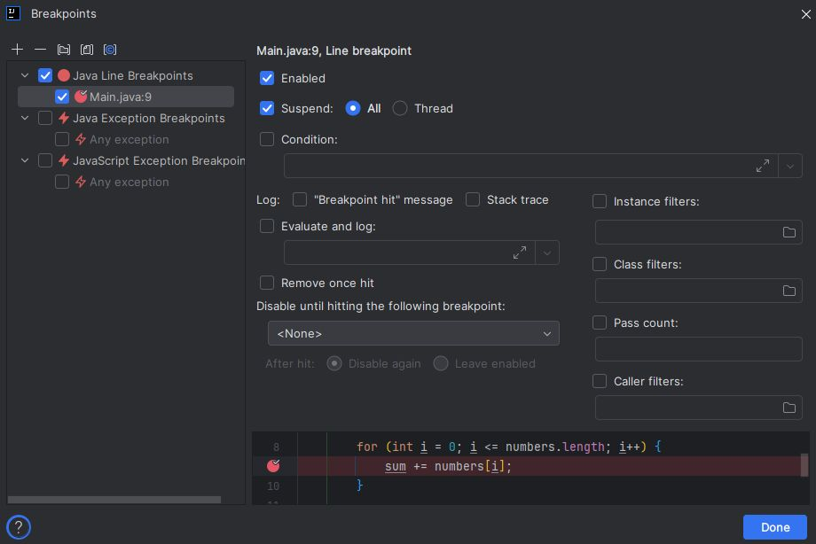
Condición: detener solo cuando i vale 2
Sobre el breakpoint de la línea sum += numbers[i];, se marca la casilla Condition y se escribe i == 2. El programa solo se detendrá en la iteración en la que i valga exactamente 2, ignorando el resto.
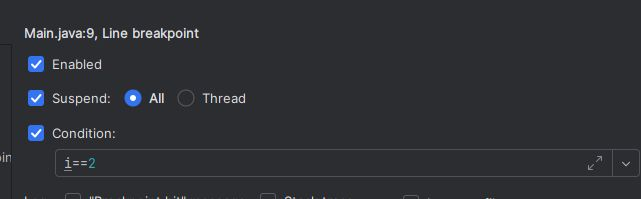
Evaluate and log: registrar sin detener
Activando Evaluate and log con el mensaje "El valor actual de i es: " + i y desmarcando Suspend, el programa no se detiene nunca, pero la consola muestra ese mensaje cada vez que pasa por el breakpoint.
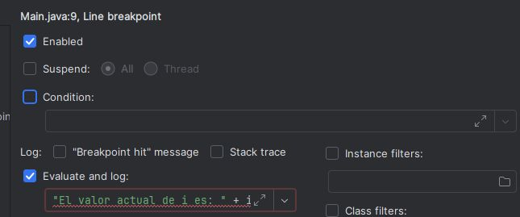
El resultado en consola muestra el valor de i en cada vuelta del bucle, hasta que el programa lanza la excepción al salirse del array:
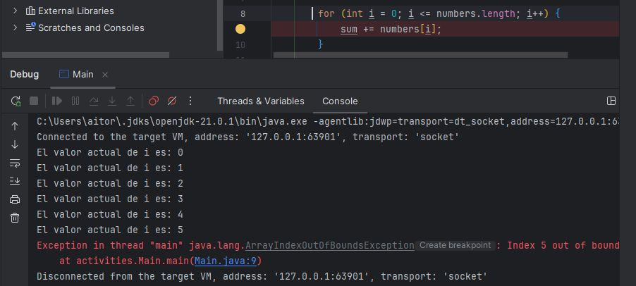
4. Inspeccionar y modificar el programa en marcha¶
Retomando el ejemplo de la suma del array, si colocas un breakpoint en la línea sum += numbers[i];, cada vez que el bucle llegue ahí el programa se detendrá y podrás examinar en la pestaña Variables:
i: el índice actual del bucle.numbers[i]: el valor del elemento que se está sumando.sum: el acumulado hasta ese momento.
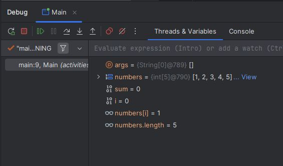
El depurador no es solo de lectura. Puedes también modificar el estado del programa en marcha:
Haciendo clic derecho sobre sum y seleccionando Set Value... puedes cambiar su valor en caliente (por ejemplo, ponerlo a 50) y seguir ejecutando para ver cómo afecta ese cambio al resultado final, sin tocar ni una línea del código fuente.
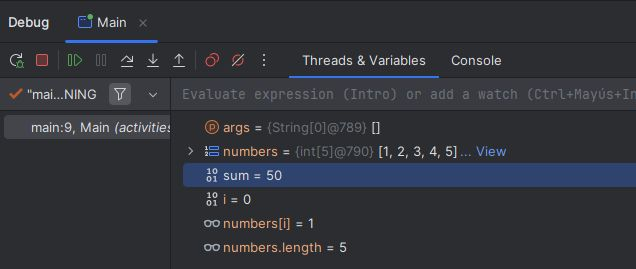
Si quieres vigilar el valor de una expresión más compleja que una sola variable, como sum + numbers[i], puedes añadirla con + New Watch... en la ventana de depuración: se recalculará automáticamente en cada parada.
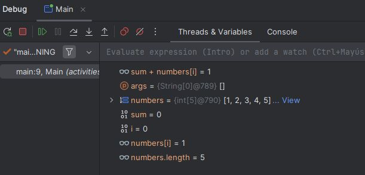
5. Avanzar paso a paso¶
Una vez detenido en un breakpoint, estos son los movimientos básicos para recorrer el programa:
flowchart LR
BP["⏸️ Detenido\nen breakpoint"] --> SO["F8 Step Over\nSiguiente línea\nsin entrar en métodos"]
BP --> SI["F7 Step Into\nEntra dentro\ndel método llamado"]
BP --> SOU["⇧F8 Step Out\nSale del método\nactual"]
BP --> R["F9 Resume\nContinúa hasta el\nsiguiente breakpoint"]
BP --> E["Alt+F8 Evaluate\nEvalúa una expresión\nen el contexto actual"]| Acción | Atajo | Qué hace |
|---|---|---|
| Step Over | F8 | Avanza a la siguiente línea sin entrar en los métodos que se llamen. |
| Step Into | F7 | Igual que Step Over, pero si la línea llama a un método propio, entra dentro de él. |
| Step Out | Shift + F8 | Sale del método actual y vuelve al punto desde donde se le llamó. |
| Resume Program | F9 | Reanuda la ejecución normal hasta el siguiente breakpoint (o hasta el final). |
| Evaluate Expression | Alt + F8 | Evalúa cualquier expresión en el contexto actual o reasigna una variable. |
6. La pila de llamadas¶
La pestaña Frames de la ventana Debug muestra la pila de llamadas (call stack): la secuencia de métodos que se han ido llamando unos a otros hasta llegar al punto donde está detenido el programa.
Leyendo la pila de llamadas
| Java | |
|---|---|
Si el breakpoint está dentro de suma(), la pila mostrará algo como suma() ← main(): indica que estás dentro de suma, y que quien la llamó fue main. Haciendo clic en cualquier línea de la pila, el IDE te lleva directamente a ese punto exacto del código.
flowchart BT
M["main() — línea 6"] --> S["suma() — línea 11\n← estás aquí"]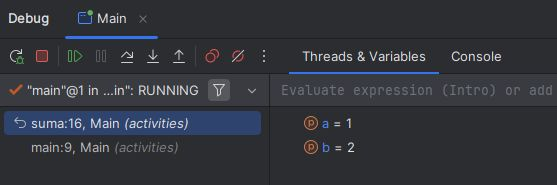
7. Desactivar todos los breakpoints a la vez¶
Si tienes varios breakpoints colocados pero por un momento quieres ejecutar el programa sin que ninguno te interrumpa —sin necesidad de borrarlos uno a uno—, el botón Mute Breakpoints de la ventana Debug los desactiva todos temporalmente. Al volver a pulsarlo, se reactivan tal y como estaban.
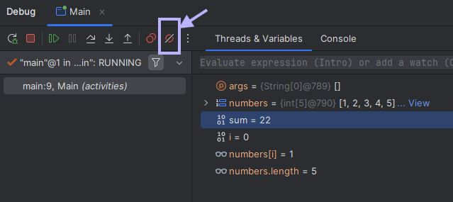